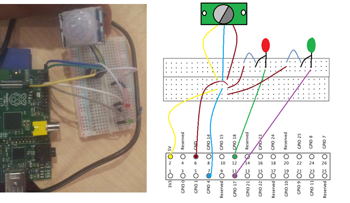

This project was created in 2014 and was my first ever project. The overall project, detects movement using a motion dector camera and uploads the picture to a website (hosted by the raspberry pi) as well as send an the picture to an email address over the SMTP protocol.
 Mr.Noob (May 11th ) Changing ownership of /boot, Available at:http://stackoverflow.com/questions/30153534/changing-ownership-of-root-boot(Accessed: May 11th).
Raspberry pi () GPIO Raspberry pi A Model, Available at:https://www.raspberrypi.org/documentation/usage/gpio/ (Accessed: 18th/05/2015).
RPI Experiences () RPI Monitor , Available at: http://rpi-experiences.blogspot.co.uk/2013/05/rpi-monitor-raspberry-pi-self-monitoting.html(Accessed: 25th/04/2015).
Geek Theory () Raspberry pi status, Available at:https://github.com/GeekyTheory/Raspberry-Pi-Status (Accessed: 25th/04/2015).
Kraptv () system-info - my RaspberryPi system summary script, Available at:https://www.raspberrypi.org/forums/viewtopic.php?t=56906&p=429560 (Accessed: 25th/04/2015).
Linux Wikipedia () RPI VCGENCMD Usage, Available at:http://elinux.org/RPI_vcgencmd_usage (Accessed: 25th/04/2015).
blog.net/en/hardware-2/get-temperature-of-your-raspberry-pi/ (Accessed: 25th/04/2015).
FolioPages () PHP photo gallery no database, Available at:http://www.foliopages.com/php-photo-gallery-no-database (Accessed: 1st/05/2015).
Gordons Projects () GPIO examples LED, Available at:https://projects.drogon.net/raspberry-pi/gpio-examples/tux-crossing/gpio-examples-1-a-single-led/G (Accessed: 7th/4ht/2015).
Mod My Pi () Raspberry Pi GPIO sensing Motion, Available at:http://www.modmypi.com/blog/raspberry-pi-gpio-sensing-motion-detection (Accessed: 21th/4th/2015).